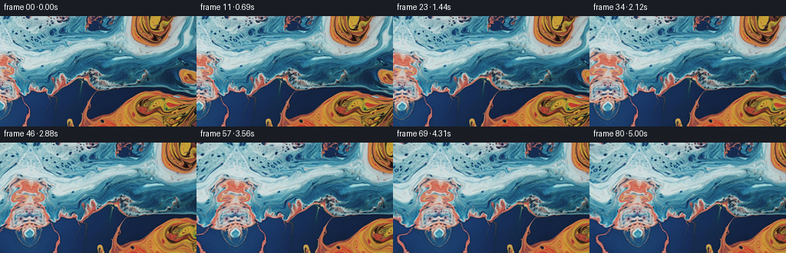
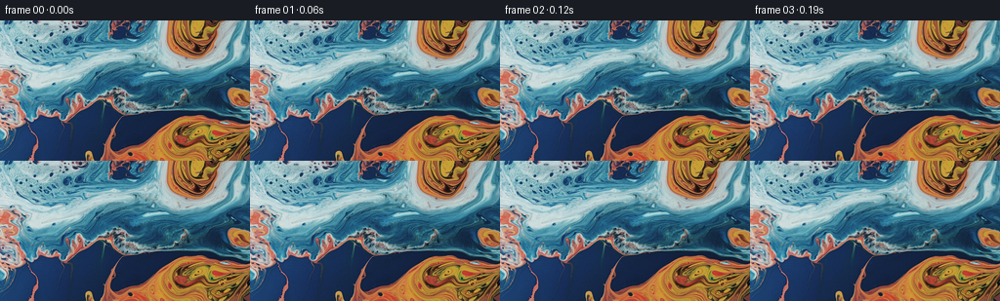

← 本轮 smoke 总览traex/GPT-5.6-Sol · 0001_s2
text · 256×144 · 16.0 FPS · 81 帧 · 状态 complete · 输出 tokens 7423
原始任务a close up of a blue and orange liquid, camera pans left
当前保存结果
已保存候选与代码修改
这里按时间展示外部捕获的候选，每份均可单独播放。保存新版本不等于完成视觉检查；下方工具证据记录实际看过的图。
候选 01 · 2026-11-09T00:30:39.870442+00:00 · 点开播放与检查图
inspection.png

transition_check.png

代码变化
--- 上一保存版本
+++ 本次保存版本
@@ -0,0 +1,116 @@
+"""Generate a gentle leftward camera pan over the supplied fluid macro image.
+
+The shot is made entirely by sampling the supplied first frame. The part of
+the fluid just outside the left edge is continued with a smoothly warped
+reflection rather than a flat/clamped border. A very small, low-frequency
+coordinate deformation keeps the two liquids feeling alive while the camera
+motion remains the dominant motion.
+"""
+
+from pathlib import Path
+
+import cv2
+import numpy as np
+from PIL import Image
+
+import artifact_io
+
+
+WIDTH = 256
+HEIGHT = 144
+FRAME_COUNT = 81
+FPS = 16.0
+
+
+def continued_coordinates(world_x: np.ndarray, world_y: np.ndarray):
+ """Map world coordinates to the source, continuing through the left edge.
+
+ Positive x is the original photograph. Negative x uses a non-uniform,
+ vertically displaced reflection of the blue material near the left side.
+ Both mappings meet exactly at x=0, avoiding a popping edge as it enters the
+ frame during the pan.
+ """
+ depth = np.maximum(-world_x, 0.0)
+ ramp = 1.0 - np.exp(-depth / 13.0)
+
+ reflected_x = (
+ depth * (0.78 + 0.055 * np.sin(world_y / 22.0))
+ + ramp * 3.0 * np.sin(world_y / 18.0 + depth / 16.0)
+ )
+ reflected_y = world_y + ramp * (
+ 5.5 * np.sin(world_y / 30.0 + depth / 21.0)
+ + 2.2 * np.sin(depth / 9.5)
+ )
+
+ source_x = np.where(world_x < 0.0, reflected_x, world_x)
+ source_y = np.where(world_x < 0.0, reflected_y, world_y)
+ return source_x.astype(np.float32), source_y.astype(np.float32)
+
+
+def build_frames(first: np.ndarray) -> np.ndarray:
+ yy, xx = np.mgrid[0:HEIGHT, 0:WIDTH].astype(np.float32)
+ result = np.empty((FRAME_COUNT, HEIGHT, WIDTH, 3), dtype=np.uint8)
+ result[0] = first
+
+ # 64 pixels over the five-second shot: obvious but unhurried macro-camera
+ # movement. The cosine profile provides a physical ease-in and ease-out.
+ total_pan = 64.0
+
+ for index in range(1, FRAME_COUNT):
+ s = index / (FRAME_COUNT - 1)
+ eased = 0.5 - 0.5 * np.cos(np.pi * s)
+ pan = total_pan * eased
+ seconds = index / FPS
+
+ # Smooth advection-like movement. Every term is expressed as the
+ # difference from its t=0 phase, so the provided first frame is the
+ # exact initial state. The amplitudes remain much smaller than the pan.
+ du = (
+ 0.72
+ * (np.sin(yy / 20.0 + 0.47 * seconds) - np.sin(yy / 20.0))
+ + 0.40
+ * (
+ np.sin((xx + yy) / 37.0 - 0.31 * seconds)
+ - np.sin((xx + yy) / 37.0)
+ )
+ )
+ dv = (
+ 0.66
+ * (np.sin(xx / 34.0 - 0.39 * seconds) - np.sin(xx / 34.0))
+ + 0.32
+ * (
+ np.sin((xx - 1.7 * yy) / 46.0 + 0.28 * seconds)
+ - np.sin((xx - 1.7 * yy) / 46.0)
+ )
+ )
+
+ world_x = xx - pan + du
+ world_y = yy + dv
+ map_x, map_y = continued_coordinates(world_x, world_y)
+
+ frame = cv2.remap(
+ first,
+ map_x,
+ map_y,
+ interpolation=cv2.INTER_CUBIC,
+ borderMode=cv2.BORDER_REFLECT_101,
+ )
+ result[index] = frame
+
+ # The contract requires bit identity, independently of interpolation
+ # implementation details.
+ result[0] = first
+ return result
+
+
+def main():
+ case_dir = Path(__file__).resolve().parent
+ first = np.asarray(Image.open(case_dir / "first_frame.png").convert("RGB"))
+ if first.shape != (HEIGHT, WIDTH, 3):
+ raise ValueError(f"unexpected first-frame shape: {first.shape}")
+ frames = build_frames(first)
+ artifact_io.save(frames, case_dir)
+
+
+if __name__ == "__main__":
+ main()
可观测工具行为
命令 1 · 2026-11-09T00:29:02.481132+00:00/bin/bash -lc 'cat GENERATION_RULES.md'
exit 0 命令 2 · 2026-11-09T00:29:02.704056+00:00/bin/bash -lc "cat prompt.txt && printf '\\n--- files ---\\n' && find . -maxdepth 2 -type f -printf '%p\\n' | sort"
exit 0 命令 3 · 2026-11-09T00:29:02.981089+00:00/bin/bash -lc "python3 - <<'PY'
from PIL import Image
im=Image.open('first_frame.png')
print(im.mode, im.size)
print(im.getextrema())
PY"exit 0 命令 4 · 2026-11-09T00:29:13.571637+00:00/bin/bash -lc "cat task_spec.json && sed -n '1,240p' artifact_io.py"
exit 0 命令 5 · 2026-11-09T00:29:14.041453+00:00/bin/bash -lc "python3 - <<'PY'
from PIL import Image
import numpy as np
im=np.array(Image.open('first_frame.png')).astype(float)
print('mean std',im.mean((0,1)),im.std((0,1)))
# HSV labels downsample grid 32x18 blocks, print hue symbol + value intensity
import colorsys
# classify orange if R>1.1B and R>G*1.05, blue if B>R*1.1, dark, pale
chars=[]
for yy in range(0,144,8):
s=''
for xx in range(0,256,8):
c=im[yy:yy+8,xx:xx+8].mean((0,1)); r,g,b=c
if max(c)<35: ch='K'
elif r>b*1.35 and r>g*1.15: ch='O'
elif r>b*1.15 and r>g*1.03: ch='o'
elif b>r*1.35: ch='B'
elif b>r*1.12: ch='b'
elif max(c)>170 and max(c)-min(c)<35: ch='W'
else: ch='.'
s+=ch
print(s)
# row/col means selected
for x in range(0,256,16): print('x',x,im[:,x:x+16].mean((0,1)).round().astype(int))
PY"exit 0 命令 6 · 2026-11-09T00:29:39.543645+00:00/bin/bash -lc "python3 - <<'PY'
try:
import cv2; print('cv2',cv2.__version__)
except Exception as e: print('no cv2',e)
try:
import scipy; print('scipy',scipy.__version__)
except Exception as e: print('no scipy',e)
PY"exit 0 命令 7 · 2026-11-09T00:30:36.724956+00:00/bin/bash -lc "python3 generate.py && python3 - <<'PY'
from pathlib import Path
from PIL import Image
import numpy as np
p=np.load('pixels.npz')['pixels']
print('packed',p.shape,p.dtype)
a=np.array(Image.open('first_frame.png')); b=np.array(Image.open('frames/00.png'))
print('frame0 identical',np.array_equal(a,b))
# motion diagnostics adjacent and endpoint differences
fs=np.stack([np.array(Image.open(f'frames/{i:02d}.png')) for i in range(81)])
for i in [1,20,40,60,80]:
print(i,'from first',np.abs(fs[i].astype(int)-fs[0]).mean(),'adj',np.abs(fs[i].astype(int)-fs[i-1].astype(int)).mean())
print('files', Path('index.html').stat().st_size,Path('inspection.png').stat().st_size)
PY"exit 0 保存候选 1 份；完成命令 7 次；可验证图片返回 0 张。原始 API 响应与完整日志保留在本地。